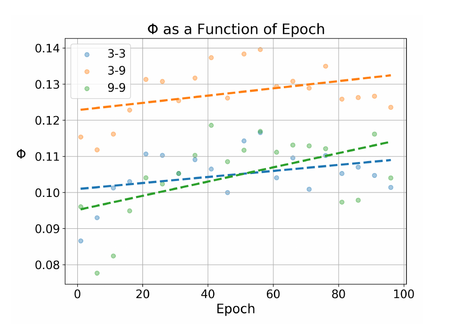

Overview
Walking along a straight line steadily takes us farther from where we started. A neural network can transform this simple movement into something less direct: as its neurons change their activation states, the internal representation may move away from an earlier state and then return towards it. This gives a concrete way to think about folding. The input path remains straight, while the network's representation of that path can double back.
In our earlier work on space folds of ReLU networks, we introduced a measure of this behaviour through the geometry of activation patterns. In this paper, we extend that construction beyond ReLU and study its mathematical properties, how it evolves during learning, and its relationship with adversarial geometry.
For a ReLU network, each input produces a binary pattern recording which hidden neurons are active. The Hamming distance between two patterns counts how many of these states differ. Sampling a straight segment between two inputs therefore gives a walk \(\Gamma=(\pi_1,\ldots,\pi_n)\) in a binary space. Let \(r_1\) be the greatest Hamming distance from the starting pattern reached along this walk, and \(r_2\) the total Hamming distance travelled between consecutive patterns. For \(r_2>0\), the folding measure is
\[ \chi(\Gamma)=1-\frac{r_1}{r_2}. \]Consider the walk \(100\to101\to111\). It travels two steps and reaches a distance of two from its starting pattern, so \(\chi=0\). If we continue from \(111\) to \(110\), the total travel becomes three while the greatest distance from the start remains two, giving \(\chi=1/3\). The final step undoes an earlier change in one neuron's state, contributing to the total travel without extending the walk's range. This is the behaviour the measure captures.
The extension beyond ReLU comes from viewing activation patterns as labels for equivalence classes of inputs:
\[ x\sim_N x'\Longleftrightarrow\pi(x)=\pi(x'). \]For ReLU networks, these classes correspond to regions where the network acts affinely. With more general monotonic activations, binarizing the activation values still groups inputs by a shared pattern, although the resulting classes need not be affine regions. We can then follow the same construction: traverse the classes, record their binary labels, and measure the resulting walk.
Several properties help interpret this measurement. Repeating a sample within the same activation pattern leaves \(\chi\) unchanged. Reversing the walk can change its value, because the point from which distances are measured changes; however, a walk with zero folding also has zero folding in reverse. Joining two paths introduces another subtlety: their combined folding need not equal the sum of their separate values. The order and arrangement of the patterns matter. Experiments also suggest that forward and reverse folding become closer in larger networks; the paper states their asymptotic equality as a conjecture.
We also examine what these quantities reveal about training. In the studied MNIST networks, the fraction of sampled paths with zero folding decreases as the number of neurons increases. During training on CIFAR-100, the median folding over paths with positive folding increases alongside validation accuracy. Dropout and batch normalization produce relatively small differences in the MNIST experiments. These observations suggest that folding statistics can help describe how learned representations develop.

To explore adversarial geometry, we return to the interaction between two connected subpaths. Write \(\chi_1\) and \(\chi_2\) for their separate folding values and \(\chi_{12}\) for the folding of their concatenation. Their deviation from additivity is measured by the interaction coefficient
\[ I=\left|\chi_{12}-\chi_1-\chi_2\right|. \]Moving the point at which a path is split lets us inspect how its two parts interact. In our MNIST experiments with FGSM and PGD attacks, this coefficient differs between paths involving original and adversarially perturbed images. This provides preliminary evidence of a connection between folding statistics and adversarial geometry. The experiments use small networks and datasets; extending the analysis to larger architectures remains a direction for further work.
BibTeX
@article{lewandowski2026exploiting,
title = {Exploiting Space Folding by Neural Networks},
author = {Lewandowski, Michal and Pisoni, Raphael and Heinzl, Bernhard and Moser, Bernhard A.},
journal = {Proceedings of the AAAI Conference on Artificial Intelligence},
volume = {40},
number = {27},
pages = {22833--22840},
year = {2026},
doi = {10.1609/aaai.v40i27.39446},
url = {https://doi.org/10.1609/aaai.v40i27.39446}
}